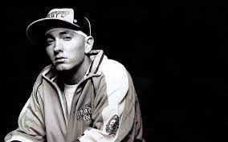

Sobre :
Marshall Bruce Mathers III, mais conhecido pelo seu nome artístico Eminem (St. Joseph, 17 de outubro de 1972), é um rapper, compositor, produtor musical e ator estadunidense. Adquiriu rápida popularidade em 1999 com o lançamento do disco The Slim Shady LP, o qual venceu o Grammy Award de Melhor Álbum de Rap do ano. O seu próximo trabalho, The Marshall Mathers LP, se tornou o álbum solo mais vendido na história dos Estados Unidos. Tal fato o tornou conhecido no mundo inteiro, e ajudou para a divulgação de sua gravadora, a Shady Records, e do seu grupo, o D12.
The Marshall Mathers LP e o seu terceiro disco, The Eminem Show, também conquistaram o Grammy Awards, tornando ele o primeiro artista a conquistar o prêmio de Melhor Álbum de Rap do ano por três vezes consecutivas. Em 2003, venceu o Oscar de melhor canção original com "Lose Yourself", que esteve presente no seu filme semi-biográfico, 8 Mile. "Lose Yourself" iria se tornar o single que por maior tempo ocupou a primeira posição das paradas de hip hop. Em 2004, boatos sobre o fim de sua carreira foram anunciados após o lançamento do álbum Encore, que foram encerrados com o anunciação de Relapse, oficialmente disponibilizado em 15 de maio de 2009. De acordo com a Nielsen SoundScan, Eminem é o artista que mais vendeu na década nos Estados Unidos e atualmente está na 30ª posição de recordistas de vendas de discos da história do país segundo o ranking da RIAA, e no mundo tem cerca de 115 milhões de álbuns vendidos, tornando-o um dos artistas recordistas de vendas de discos. Em 2010, lançou Recovery, no qual estava presente o single "Love the Way You Lie", que foi um enorme sucesso comercial. Recovery tornou-se o sexto álbum consecutivo de Eminem a estrear na primeira posição das paradas do Estados Unidos. De início, o álbum ficou por cinco semanas consecutivas no topo, retornando posteriormente para outras duas, e somando sete semanas em primeiro lugar, no total.
Eminem foi escolhido como o 79º na lista dos "100 Melhores Artistas de Todos os Tempos" da VH1. Em uma lista similar, foi ranqueado em 82º pela revista Rolling Stone. Incluindo o trabalho com o D12, Eminem acumula 9 álbuns no topo da Billboard Top 200, sendo 7 solo (6 de estúdio, 1 compilação) e 2 com o D12. Ele tem 13 singles na primeira posição em todo o mundo. Tal sucesso fez Eminem ser reconhecido pela Billboard como o Artista da Década. De acordo com a mesma Billboard, o rapper teve dois dos cinco álbuns mais vendidos entre 2000 e 2009. Eminem também já vendeu mais de 17 milhões de downloads de suas músicas apenas nos Estados Unidos. Em 2010, a MTV classificou Eminem como o sétimo maior ícone da história da música pop. Em 2009, Eminem foi eleito, em votação popular, o melhor rapper de todos os tempos pela revista Vibe, vencendo Tupac na final. As composições de Eminem renderam controvérsias; alguns críticos consideraram as suas letras como misógenas e homofóbicas, com características de discurso de ódio. Em 2006, a ABC News intitulou-o como o "músico mais polêmico do novo milênio".
Início da carreira :
1992-1998: Início da carreira e Infinite.
Inicialmente, assinou contrato com a FBT Productions, em 1992, comandada pelos irmãos Jeff e Mark Bass. Também cozinhou e lavou louça em um pequeno restaurante em St. Clair Shores por algum tempo, onde recebia um salário mínimo. Em 1996, seu álbum de estreia Infinite, gravado no estúdio "Bassmint", foi lançado através do selo independente Web Entertainment. Já com o nome artístico de Eminem, ele relembra: "Obviamente, eu era jovem e influenciado por outros artistas, e eu me lembro de vários comentários dizendo que eu parecia com Nas e AZ. 'Infinite' serviu para eu tentar descobrir qual era o meu estilo de rap, como iria soar minha voz no microfone e ao vivo. Foi uma fase de crescimento. Eu senti 'Infinite' como um álbum demo que acabou sendo pressionado para tornar-se de estúdio". Este disco incluía as dificuldades para sustentar sua filha recém-nascida Hailie Jade Scott, a dificuldade de ganhar dinheiro e o sonho de ficar rico. No início da sua carreira, Eminem colaborou com o MC Royce da 5'9" no dueto chamado Bad Meets Evil. Após o lançamento de Infinite, as lutas pessoais de Eminem contra o abuso de drogas e álcool culminaram em uma tentativa frustrada de suicídio.
Jimmy Iovine, presidente da Interscope Records solicitou uma fita demo de Eminem após ele ficar na segunda posição do Rap Olympics de 1997. A vitória de Eminem no evento Wake Up Show's Freestyle, na categoria Músico do Ano também facilitou para que ele assinasse contrato com uma gravadora. Iovine mostrou a fita para o produtor Dr. Dre, fundador da Aftermath Entertainment. Com o lançamento de The Slim Shady EP, Mathers foi acusado de imitar o estilo e a métrica utilizada pelo rapper Cage. Dre e Eminem começaram a gravar faixas juntos para a sua estreia em um grande selo, ao ponto de levar Marshall a fazer uma participação especial no álbum Devil Without a Cause do consagrado rapper Kid Rock. A revista de hip hop The Source destacou Eminem na coluna "Unsigned Hype" de março de 1998.
Vida pessoal :
Em termos de relacionamentos pessoais, Eminem teve um histórico conturbado. Ele se casou com Kimberly Anne Scott em 1999, mas o relacionamento foi marcado por altos e baixos. Eles se divorciaram em 2001, depois de se divorciarem e se reconciliarem algumas vezes. Eles têm uma filha juntos, Hailie Jade Scott, que nasceu em 1995 e é frequentemente mencionada em suas músicas. Além de seu casamento, Eminem também enfrentou lutas com vícios, incluindo dependência de drogas e álcool, que ele abordou abertamente em sua música e em entrevistas ao longo dos anos. Ele se tornou sóbrio depois de uma overdose quase fatal em 2007 e tem sido um defensor da sobriedade desde então.
No geral, a vida pessoal de Eminem é complexa e multifacetada, e tem sido uma fonte de inspiração para sua música ao longo de sua carreira. Ele é conhecido por ser reservado sobre certos aspectos de sua vida pessoal, enquanto outros, como seus desafios com vícios e sua relação com sua mãe, são temas frequentes em sua música e têm sido discutidos abertamente por ele em várias ocasiões.
Galeria do Artista :


Como entrar em contato com o artista ?
Para entrar em contato com Eminem ou sua equipe, você pode utilizar as seguintes opções :
- Redes Sociais: Você pode tentar enviar mensagens diretamente através das contas oficiais de Eminem no Twitter, Instagram, Facebook, etc.
- Website Oficial: Verifique o site oficial de Eminem ou de sua gravadora, Shady Records, para encontrar informações de contato ou formulários de contato.
- Agente ou Gerente: Eminem provavelmente tem um agente ou gerente que lida com suas atividades e representação. Você pode tentar encontrar informações de contato deles para questões profissionais.
- Correspondência Tradicional: Em alguns casos, você pode enviar correspondência física para o endereço comercial ou para a agência de representação de Eminem.